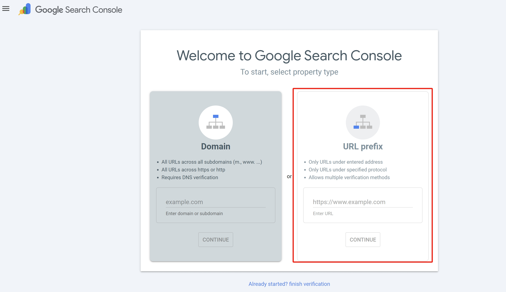

Hexo + GitHub Pages 实现 Google、Bing 搜索引擎收录
Hexo + GitHub Pages 实现 Google、Bing 搜索引擎收录
辛苦搭建的博客在浏览器上搜不到，所以开始查找教程，在此处做个记录；
目录
- [Google 收录](#Google 收录)
- [Bing 收录](#Bing 收录)
基本要求
已搭建博客且博客可以正常访问：(包含搭建博客所需的环境）
1
https://yourname.github.io
Hexo 能正常生成并部署：
1
2
3hexo clean
hexo g
hexo d科学上网
配置流程
Google 收录
步骤1：Google Search Console 验证
1.1 登录 Google Search Console , 选择 “URL prefix” 方式

**1.2 下载googlexxx.html**：
输入你的博客地址，点击continue，出现如下界面，点集红色框部分下载googlexxx.html；

1.3 配置_config.yml：
将下载的googlexxx.html放在blog/source/目录下，打开博客主目录下的_config.yml配置skip_render：
1 | skip_render: |
skip_render 的作用是：防止 Hexo 将 google 验证文件当作模板处理，否则会导致验证文件内容被篡改，验证失败。
1.4 重新部署：
运行如下命令重新部署博客：
1 | hexo clean |
1.5 验证准备：
在浏览器访问 https://你的域名/googlexxxx.html，确认看到的是纯代码后，回 Google 后台点击”验证”，如下红色框内。

1.6 确认：
打开 goolge search console 点击左边导航栏网址检查 ，输入对应博客网址，如果得到如下界面则表示收录成功；（可能存在延迟）

！！注意：此处仅是浏览器收录成功，并非在浏览器中成功展示，也就是说还无法在浏览器中搜索到对应博文，添加下文sitemap方式协助浏览器加速抓取。
步骤2：提交Sitemap
sitemap 是一个页面列表，用于帮助搜索引擎更快发现站点结构
2.1 安装sitemap插件：
在博客根目录下运行下列命令
1 | npm install hexo-generator-sitemap --save |
在博客目录下的 public 文件下生成 sitemap.xml 则表示成功；
2.2 修改配置文件：
打开博客主目录下的_config.yml进行编辑：
确认URL正确
1
url: https://username.github.io # 确认此处为自己博客的网址
开启
sitemap，可在url路径下添加：1
2sitemap:
path: sitemap.xml
2.3 部署并确认
重新部署：
1
2
3hexo clean
hexo g
hexo d确认：在浏览器中输入如下网址，得到正常代码则正确。
1
https://yourname.github.io/sitemap.xml
2.4 提交sitemap：
回到Google Search Console 点击左边导航栏站点地图，输入sitemap.xml 并提交：（状态显示成功即可）

提交 sitemap 后不会立刻生效，新站通常需要 1–7 天，期间显示“无法抓取”也属于正常情况。
此处已经完成Google收录的流程了。
Bing 收录
搞定了 Google，Bing 就非常简单了。
步骤1：
步骤2：
选择 “Import from Google Search Console”。
步骤3：
登录你的 Google 账号，数据会自动同步过来！
小技巧：Bing 有个“URL Submission”功能，写完文章后去那里手动提交一下链接，收录速度比 Google 还要快。
步骤4:
验证方式和 [Google 收录/步骤1/1.6确认](#1.6 确认) 步骤类似；打开Bing Webmaster Tools 点击 URL检查。
状态判断
Google 是否真的没问题？
只要满足以下条件，即可确认 Google 收录流程已完成：
- Google Search Console 验证通过
- 页面可正常访问（非 404 / 403）
- URL 检查显示 “已收录到 Google”
- 等待
Bing 是否真的没问题？
Bing 的判断标准与 Google 不同：
- Bing Webmaster Tools 验证通过
- sitemap 显示抓取成功
- URL Submission 提交成功
- 等待
Bing 的搜索结果展示通常比 Google 慢 1–3 周，请耐心等待。